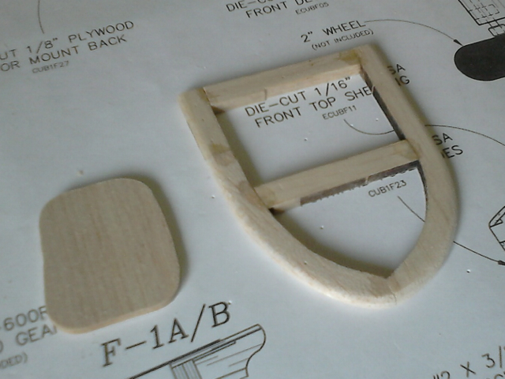
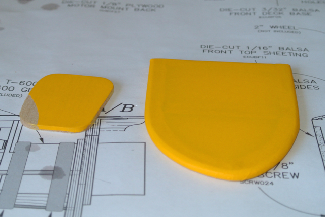
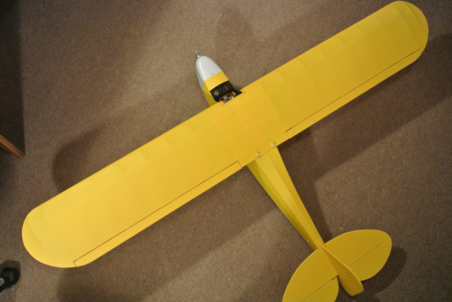

Since this is the first time that I have covered a model since the tissue and dope days of my teenage years, I decided to make up a simple test piece so as to try out the process. I bought a small roll of Solartex in Cub Yellow and a thermal sealing iron. Solartex had been recommended by several club members and since it already has an adhesive coating it seems like a good choice. The adhesive melts at a lower temperature than the fabric shrinks, so you can fix it in place first and then shrink it. My trials with a simple open frame (with rounded edges) and a solid piece of balsa seemed to work quite well. The iron comes with a 'sock', which helps make the process seem more controlled.
It wasn't that covering took a particularly long time (although the process was quite time consuming), but it took me from mid September to mid November to do the main covering of my model. Other things just got in the way. At present I still have the wing struts and the landing gear fairings to cover.
I am amazed at the flexibility of the Solartex material. Even with my inexperience I was able to cover the awkwardly shaped back of the fuselage, but I could not remove all the wrinkles where the Solartex turns under at the wing tips. I also found that a cut edge overlapping another piece of fabric is quite visible. So where this was going to happen I started tearing the fabric so as to produce a less defined edge. Being a woven fabrics, once you have removed the backing, it tears along the weave and so produces a straight edge.
My only disappointment is the transparency of the material. It took me a while to decide to go with Cub yellow, but I was surprised how much of the underlying structure shows through. This also means that marks on the structure show through and spoil the appearance.